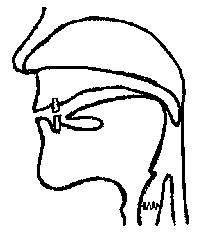
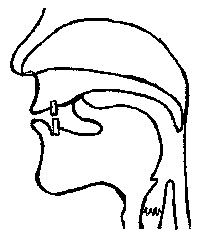

| |
Pāli
Thực Hành
Mẫu
Tự Pāli và Cách Phát Âm
Tỳ
kheo Indacanda
(Nguyệt-Thiên Trương Ðình Dũng)
Tủ
Sách Ðồi Lá Giang
|
Xin lưu ý: Ðọc
với phông chữ Unicode Việt Phạn VU-Times |
Mẫu tự Pāli
Mẫu tự Pāli gồm có 33 phụ âm và 8
nguyên âm.
I) Phụ Âm (Byañjana):
Phụ âm Pāli được chia làm 2 nhóm:
1. Các phụ âm
được sắp xếp thành Ðoàn (Vagga):
Gồm có 25 phụ âm được phân chia ra
như sau:
|
|
Âm ít vang & nhẹ
(1)
|
Âm ít vang & gió
(2)
|
Âm vang & nhẹ
(3)
|
Âm vang & gió
(4)
|
Âm mũi
(5)
|
|
1. Âm cổ họng
|
k
|
kh
|
g
|
gh
|
ṅ
|
|
2. Âm nóc họng
|
c
|
ch
|
j
|
jh
|
ñ
|
|
3. Âm uốn lưỡi
|
ṭ
|
ṭh
|
ḍ
|
ḍh
|
ṇ
|
|
4. Âm răng
|
t
|
th
|
d
|
dh
|
n
|
|
5. Âm môi
|
p
|
ph
|
b
|
bh
|
m
|
2. Các phụ
âm còn lại gọi là Vô Ðoàn (Avagga):
Gồm có 8 phụ âm còn lại: y,
r, l, v, s, h, ḷ, ṁ
3. Cách Phát
Âm
Ðể phát ra âm thanh, có hai vấn đề
cần hiểu rõ là: Phương thức phát âm và Sử dụng các
bộ phận của cơ thể có liên quan đến việc phát âm.
Vấn đề này xin được trình bày một cách tóm tắt như
sau:
Phương thức phát âm:
Phân tích 4 cột đầu của các phụ
âm được sắp xếp thành Ðoàn (Vagga) theo hàng dọc
từ trái sang phải.
- Cột 1: Âm nhẹ và ít vang (sithila
- aghosa).
- Cột 2: Âm có hơi gió và ít vang (dhanita - aghosa).
- Cột 3: Âm nhẹ và vang (sithila - ghosa).
- Cột 4: Âm có hơi gió và vang (dhanita - ghosa).
Chú thích:
Âm nhẹ (sithila) được đọc
bình thường có hơi ra từ miệng rất ít. Âm nhấn
mạnh (dhanita) có hơi gió từ phần ngực ở phiá dưới
đưa lên. Ðặt lòng bàn tay ở trước miệng để cảm
nhận được hơi gió; hoặc đặt một tờ giấy ở phía
trước miệng, hơi gió đi ra sẽ làm tờ giấy di động.
Còn âm ít vang (aghosa) và âm
vang (ghosa) tùy thuộc vào dây thanh quản rung nhiều
hay ít. Kiểm tra bằng cách đặt ngón tay ở cổ để
cảm nhận sự hoạt động của dây thanh quản.
Sử dụng các bộ phận của cơ
thể:
Phân tích các phụ âm được sắp
xếp thành Ðoàn (Vagga) theo hàng ngang từ trên xuống
dưới dựa vào sự tiếp xúc của hai bộ phận chính là vòm
họng và lưỡi (được sắp xếp từ sau ra trước):
- Hàng 1: Âm cổ họng (gaṇṭhaja)
do sự tiếp xúc của Vòm họng phần mềm và Phần cuối
của lưỡi.
- Hàng 2: Âm nóc họng (tāluja)
do sự tiếp xúc của Vòm họng phần cứng và Phần
giữa của lưỡi.
- Hàng 3: Âm uốn lưỡi (muddhaja)
do sự tiếp xúc phần Phía trên của nướu và Phần chóp
của lưỡi cong lên.
- Hàng 4: Âm răng (dantaja) do
sự tiếp xúc của Răng trên và Phần chóp của lưỡi.
- Hàng 5: Âm môi (oṭṭhaja) do
việc Môi trên và Môi dưới bật ra gây nên âm thanh.
- Cột 5: Âm mũi (nāsikaja), ở
nhóm này (5) âm được phát ra do hơi được đưa ra từ
mũi là chính.
|
|
Nướu
Răng
|
Lưỡi
(Phần Chóp)
|
Lưỡi
(Phần Giữa)
|
Vòm họng
(Phần Cứng)
|
|
|
Mũi
|
|
Vòm họng (Phần mềm)
|
|
Môi
|
Khe thông lên mũi
|
|
Răng
|
Lưỡi (Phần cuối)
|
|
Cằm
|
Cổ họng
|
3.1. Âm cổ họng (gaṇṭhaja):
gồm có k, kh, g, gh, ṅ
|  |
- k tương tợ như âm
"cờ" trong chữ "cái ca" của
tiếng Việt.
- kh lúc phát âm giống
như âm k ở trên nhưng hơi thót bụng lại để có
làn hơi đẩy ra, tương tợ như kờ-hờ đọc
nhanh.
- g tương tợ như âm
"gờ" trong chữ "gà" của tiếng
Việt, nhớ làm cho dây thanh quản rung nhiều.
- gh lúc phát âm giống
như âm g ở trên nhưng hơi thót bụng lại để có
làn hơi đẩy ra, tương tợ như gờ-hờ đọc
nhanh.
- ṅ tương tợ như
"ng" của tiếng Việt; nên nhớ âm này
được phát hơi ra bằng mũi.
|
3.2.Âm nóc họng (tāluja):
gồm có c, ch, j, jh, ñ
|
Khi phát âm, phần giữa của
lưỡi được dán vào nóc họng rồi đưa nhẹ
xuống để phát ra âm thanh.
- c giống như
"chờ" với giọng bị chớt, chú ý vị trí
của lưỡi trước lúc phát âm.
- ch cách phát âm giống
như trên, hơi thót bụng lại để có hơi gió phát
ra như "chờ-hờ".
- j có sự rung mạnh
của dây thanh quản, gần giống như "z"
của tiếng Pháp.
- jh phát âm giống như
j ở trên, nhớ thót bụng để có hơi gió từ phía
dưới được đẩy lên tạo ra âm như
"zờ-hờ".
- ñ tương tợ như âm
"nhờ" củatiếng Việt, điều cần nhớ là
âm này được phát hơi ra ở mũi. |
3.3.Âm uốn lưỡi (muddhaja):
gồm có ṭ, ṭh, ḍ, ḍh, ṇ
|  |
Trước tiên nghĩ rằng sẽ phát
âm ra "tờ, tờ-hờ, đờ, đờ-hờ, nờ"
của tiếng Việt, nhưng do việc uốn cong đưa lưỡi
lên phía trênrồi vỗ mạnh xuống để tạo ra âm
thanh, khiến âm phát ra nghe như bị ngọng và có
vẻ nặng nề.
- Âm ṭ và ṭh
chỉ khác nhau ở chổ âm ṭh có hơi gió đưa ra
mạnh hơn.
- Âm ḍ và ḍh là
âm vang nên làm cho dây thanh quản rung mạnh và âm
ḍh có hơi gió được đẩy ra mạnh hơn.
- ṇ là âm phát ra ở mũi. |
3.4.Âm răng (dantaja): gồm
có: t, th, d, dh, n
|
Ðược phát âm
giống như tiếng Việt, nhớ chú ý đến vị trí
của lưỡi và răng trước lúc phát ra âm thanh.
- t giống "tờ"
của tiếng Việt.
- th tương tợ như
"tờ-hờ" của tiếng Việt, chú ý làn hơi
ra ở miệng mạnh hơn.
- d giống âm "đờ"
của tiếng Việt, để ý dây thanh quản.
- dh giống âm trên, chú
ý thót bụng để có hơi gió tạo ra âm như là
"đờ-hờ".
- n là âm phát ra ở mũi. |
3.5.Âm môi (oṭṭhaja):
gồm có p, ph, b, bh, m
|
Ðược phát âm gần giống như
tiếng Việt, có hơi phát ra mạnh hơn do việc hai
môi bật ra mạnh hơn so với sự phát âm của
tiếng Việt.
- p giống "pờ"
của tiếng Việt.
- ph phát âm như
"pờ-hờ", nhớ thót bụng lại để có làn
hơi gió mạnh thổi ra.
- b giống "bờ"
của tiếng Việt, chú ý đến sự rung của dây
thanh quản.
- bh giống như
"bờ-hờ" đọc nhanh. Chú ý hơi gió được
đưa ra và sự rung của dây thanh quản.
- m cũng giống như
"mờ" của tiếng Việt, nhớ đây là âm mũi.
|
Cách Phát Âm các phụ âm Vô Ðoàn
(Avagga):
Các phụ âm: y, r, l, v, s, h, ḷ, ṁ
đều thuộc loại vang (ghosa); do đó, nhớ làm rung dây
thanh quản nhiều lúc phát âm.
- y được xếp vào âm nóc
họng (tāluja).Ðặt lưỡi vào vị thế như ở hình
2 và phát âm như là "dờ" của tiếng Việt.
- r và ḷ được xếp vào
âm uốn lưỡi (muddhaja). Ðặt lưỡi vào vị thế
như ở hình 3 rồi bật lưỡi xuống, âm phát ra gần
giống như âm "rờ" và "lờ" ở tiếng
Việt. Một số tài liệu khác đề cập đến phụ âm
thứ 34 là ḷh; trường hợp này có thể được xem như
là một sự kết hợp của ḷ và h .
- l và s được xếp vào
âm răng (dantaja) được phát âm như "lờ"
và "xờ" của tiếng Việt, xin xem vị thế của
lưỡi ở hình 4.
- v được xếp vào âm môi (oṭṭhaja).
Cách phát âm cũng như "vờ" của tiếng Việt
với môi được bật ra mạnh hơn. Cũng có nơi phát âm
như là "w" của tiếng Pháp.
- h được xếp vào âm cổ
họng (gaṇṭhaja). Ðặt lưỡi vào vị thế như
ở hình 1 rồi phát âm như "hờ" của ở tiếng
Việt. Chú ý đến dây thanh quản và hơi gió đưa ra
nhiều hơn.
- ṁ được xếp vào âm mũi (nāsikaja)
- còn được gọi là niggahita hoặc anusara - có
sự phát âm phụ thuộc vào nguyên âm đi trước và có
giọng mũi. Ví dụ, iṁ được đọc như là
"ing" với giọng mũi, uṁ được đọc như
là "ung" với giọng mũi, v.v...
II) Các
Nguyên Âm (Sara)
Gồm có: a,
ā, i, ī, u, ū, e, ođược chia ra như sau:
- Nguyên âm giọng ngắn (rassa):
a đọc
như "á" tiếng Việt,
i đọc như "í" tiếng Việt,
u đọc như "ú" tiếng Việt.
- Nguyên âm giọng dài (dīgha):
ā đọc như "a" được
kéo dài của tiếng Việt,
ī đọc như "i" được kéo dài tiếng
Việt,
ū đọc như "u" được kéo dài tiếng
Việt,
e đọc như "ê" được kéo dài tiếng
Việt,
o đọc như "ô" được kéo dài tiếng
Việt.
Riêng hai nguyên âm giọng dài e, o
sẽ trở thành giọng ngắn khi có hai phụ âm đi liền phía
sau, ví dụ: upekkhati, sotthi.
Ngoài ra, còn có sự phân biệt về âm
nhẹ (laghu) hoặc nặng (garu), được qui định
bởi nhịp (mātrā) ngắn dài. Âm nhẹ gồm có một
nhịp, âm nặng gồm có hai nhịp.
- Âm nhẹ (laghu) gồm có các nguyên
âm giọng ngắn: a, i, u. Ví dụ: miga, upari, v.v...
- Âm nặng (garu) gồm:
a. Các nguyên âm giọng dài: ā,
ī, ū, e, o. Ví dụ: mātā, pāto, v.v...
b. Các nguyên âm giọng ngắn theo sau bởi hai phụ âm liên
tiếp hoặc niggahita (ṁ). Ví dụ: Buddhaṁ, araññaṁ,
aggiṁ, sattuṁ, v.v...
VỊ THẾ CỦALƯỠI:
|
|
PHẦN CHÓP
CỦA LƯỠI
|
PHẦN GIỮA
CỦA LƯỠI
|
PHẦN GỐC
CỦA LƯỠI
|
|
- CAO
|
|
|
- TRUNG BÌNH
|
|
- THẤP
|
|
|
Nguyên âm ī (ở trên)
Nguyên âm i (ở dưới)
Nguyên âm ū (ở trên)
Nguyên âm u (ở dưới)
|
|
Sau khi thực tập phát âm các phụ âm
và nguyên âm, việc ráp vần sẽ không còn khó khăn lắm
so với người Việt chúng ta. Ðiều cần lưu ý ở đây là
khi phát âm, quý vị cần nắm vững về:
- Nguyên âm giọng ngắn (rassa)
- Nguyên âm giọng dài (dīgha)
- Âm nhẹ (laghu)
- Âm nặng (garu)
như đã được trình bày ở phần Các
Nguyên âm(Sara), vì lúc tụng đọc kinh tập thể, sự
ngắt hơi đúng cách và đồng nhịp (liên quan đến trường
độ) sẽ có tác động mạnh đến thính giác và tâm tư
của người nghe. Vấn đề này quý vị có thể cảm nhận
được lúc lắng nghe các vị Sư đọc kinh Pāli.
Về cao độ và âm điệu, lúc đọc
tụng văn xuôi không có sự khác biệt nhiều giữa truyền
thống của các quốc gia. Riêng về văn vần, có nhiều
phong cách khác nhau tùy địa phương, quý vị có thể học
tập tùy duyên và khả năng; vấn đề quan trọng là cố
gắng tìm hiểu được lời Phật dạy, còn các truyền
thống tụng đọc chỉ là hình thức.
* * *
Thỉnh ý:
Trong lúc theo đuổi sự học
tập, chúng tôi có cơ hội được tiếp cận những
kiến thức mới về ngôn ngữ học, nghĩ rằng có thể
đem lại ít nhiều lợi ích đến quý dộc giả, nên không
ngại vốn liếng học hỏi còn hạn hẹp mạo muội trình
bày đến quý vị sự hiểu biết của cá nhân. Trong các
tập kế tiếp, chúng tôi sẽ cố gắng phân tích và trình
bày Văn phạm của ngôn ngữ Pāli dựa trên những đoạn
kinh quen thuộc, hy vọng sẽ giúp cho quý vị vốn kiến
thức văn phạm căn bản trong việc học hiểu lời dạy
của Ðức Phật. Ngưỡng mong nhận được lời chỉ
dạy của các bậc cao minh và sự góp ý của quý độc
giả để tài liệu này có được phần đóng góp tích
cực.
Xin email về:
Bhikkhu Indacanda (Nguyệt-Thiên Trương
Ðình Dũng)
nguyet_thien@hotmail.com
; dinda@u.washington.edu
Dứt Phần trình bày về Mẫu
tự Pāli và Cách Phát Âm.
-ooOoo-
Ðầu
trang |
|